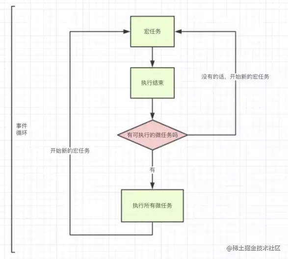

javascript 是一个单线程语言
javascript 中的所有任务被分为同步任务和异步任务两大类
事件循环机制（Event Loop）是 javascript 的执行机制
异步任务分为宏任务和微任务
常见宏任务与微任务
- 宏任务一般是：包括整体代码 script，setTimeout，setInterval、setImmediate。
- 微任务：原生 Promise(有些实现的 promise 将 then 方法放到了宏任务中)、process.nextTick、Object.observe(已废弃)、 MutationObserver 记住就行了。
事件循环机制
同步和异步任务分别进入不同的执行”场所”，同步的进入主线程，异步的进入 Event Table 并注册函数
当指定的事情完成时，Event Table 会将这个函数移入 Event Queue。
主线程内的任务执行完毕为空，会去 Event Queue 读取对应的函数，进入主线程执行。
我们不禁要问了，那怎么知道主线程执行栈为空呢？js 引擎存在 monitoring process 进程，会持续不断的检查主线程执行栈是否为空，一旦为空，就会去 Event Queue 那里检查是否有等待被调用的函数。
当有异步任务被压入异步任务队列时候，javascript 会将这些异步任务分为宏任务和微任务两个新的队列。然后，在所有同步任务执行完毕之后，异步任务会优先执行所有已经存在任务队列中的微任务。在所有的微任务执行完毕之后，再去宏任务队列中执行一个（注意是一个）宏任务，执行完一个宏任务之后会再去微任务队列中检查是否有新的微任务，有则全部执行，再回到宏任务队列执行一个宏任务，以此循环。_这一套流程，就是事件循环_（event loop）

早期异步代码困境
- 众所周知，js 是单线程的，耗时操作都是交给浏览器来处理，等时间到了从队列中取出执行，设计到事件循环的概念，笔者也分享过，可以看以下，理解了可以更好的理解 promise。
- 我以一个需求为切入点，我模拟网络请求(异步操作)
- 如果网络请求成功了，你告知我成功了
- 如果网络请求失败了，你告知我失败了
1.1 大聪明做法
- 首先你要理解 js 代码的执行顺序，而不是是想当然的，代码其实并不是按照你书写的顺序执行的。
- 那么为什么是 undefined 呢？
- 首先当我执行 requestData 函数，开始执行函数。遇到了异步操作不会阻塞后面代码执行的，因为 js 是单线程的，所以你写的 return 成功或者失败并没有返回给 requestData，那我这个函数中，抛开异步操作，里面并没有返回值，所以值为 undefined。
function requestData(url) {
setTimeout(() => {
if (url === 'iceweb.io') {
return '请求成功'
}
return '请求失败'
}, 3000)
}
const result = requestData('iceweb.io')
console.log(result) //undefined
2.2 早期正确做法
- 早期解决方案都是传入两个回调，一个失败的，一个成功的。那很多开发者会问这不是挺好的吗？挺简单的，js 中函数是一等公民，可以传来传去，但是这样太灵活了，没有规范。
- 如果使用的是框架，还要阅读一下框架源码，正确失败的传实参的顺序，如果传参顺序错误这样是非常危险的。
function requestData(url, successCB, failureCB) {
setTimeout(() => {
if (url === 'iceweb.io') {
successCB('我成功了,把获取到的数据传出去', [{name:'ice', age:22}])
} else {
failureCB('url错误，请求失败')
}
}, 3000)
}
//3s后 回调successCB
//我成功了,把获取到的数据传出去 [ { name: 'ice', age: 22 } ]
requestData('iceweb.io', (res, data) => console.log(res, data), rej => console.log(rej))
//3s后回调failureCB
//url错误，请求失败
requestData('icexxx.io', res => console.log(res) ,rej => console.log(rej))
回调函数
如果需要获取一个函数中异步操作的结果，则必须通过回调函数来获取
function fn(callback) {
setTimeout(function() {
var data = 'hello'
callback(data)
}, 1000)
}
fn(function(data) {
console.log(data)
})
如果想取到 data 的数据进行处理，就只能进行回调函数，因为定时器是异步的，函数不会等待执行完毕就直接结束了，只有在调用的时候传递一个函数给里面的定时器才行
1). 你定义的
2). 你没有调
3). 但最终它执行了(在某个时刻或某个条件下)
promise
Promise 的出现，让异步请求的执行更加语义化，它将异步请求串行。
Promise 是异步编程的一种解决方案，比传统的解决方案——回调函数和事件——更合理和更强大。
所谓 Promise，简单说就是一个容器，里面保存着某个未来才会结束的事件（通常是一个异步操作）的结果。从语法上说，Promise 是一个对象，从它可以获取异步操作的消息。Promise 提供统一的 API，各种异步操作都可以用同样的方法进行处理。
Promise 对象有以下两个特点。
（1）对象的状态不受外界影响。Promise 对象代表一个异步操作，有三种状态：Pending（进行中）、Resolved（已完成，又称 Fulfilled）和 Rejected（已失败）。
只有异步操作的结果，可以决定当前是哪一种状态，任何其他操作都无法改变这个状态。
（2）一旦状态改变，就不会再变，任何时候都可以得到这个结果。Promise 对象的状态改变，只有两种可能：从 Pending 变为 Resolved 和从 Pending 变为 Rejected。
优缺点
promise 的缺点
1、无法取消 Promise,一旦新建它就会立即执行，无法中途取消。
2、如果不设置回调函数，promise 内部抛出的错误，不会反应到外部。
3、当处于 pending 状态时，无法得知目前进展到哪一个阶段（刚刚开始还是即将完成）。
promise 的优点
1.防止地狱回调
2 更好地进行错误捕获
多重嵌套 callback 除了会造成上面讲的代码缩进问题，更可怕的是可能会造成无法捕获异常或异常捕获不可控。
（1）比如下面代码我们使用 setTimeout 模拟异步操作，在其中抛出了个异常。但由于异步回调中，回调函数的执行栈与原函数分离开，导致外部无法抓住异常。
function fetch(callback) {
setTimeout(() => {
throw Error('请求失败')
}, 2000)
}
try {
fetch(() => {
console.log('请求处理') // 永远不会执行
})
} catch (error) {
console.log('触发异常', error) // 永远不会执行
}
当 return 一个 Promise 对象的时候，后续的 then 中的 方法的第一个参数会作为 p2 的 resolve
异步和同步
- 异步，操作之间没有关系，同时执行多个操作， 代码复杂
- 同步，同时只能做一件事，代码简单
Promise 对象
- 用同步的方式来书写异步代码
- Promise 让异步操作写起来，像在写同步操作的流程，不必一层层地嵌套回调函数
- 改善了可读性，对于多层嵌套的回调函数很方便
- 充当异步操作与回调函数之间的中介，使得异步操作具备同步操作的接口
Promise 也是一个构造函数
- 接受一个回调函数 f1 作为参数，f1 里面是异步操作的代码
- 返回的 p1 就是一个 Promise 实例
- 所有异步任务都返回一个 Promise 实例
- Promise 实例有一个 then 方法，用来指定下一步的回调函数
Promise.all(promiseArray)方法
- 将多个 Promise 对象实例包装，生成并返回一个新的 Promise 实例
- promise 数组中所有的 promise 实例都变为 resolve 的时候，该方法才会返回
- 并将所有结果传递 results 数组中
- promise 数组中任何一个 promise 为 reject 的话，则整个 Promise.all 调用会立即终止，并返回一个 reject 的新的 promise 对象
Promise.race([p1, p2, p3])
- Promse.race 就是赛跑的意思
- 哪个结果获得的快，就返回那个结果
- 不管结果本身是成功状态还是失败状态
Promise.all 和 Promise.race 都是有使用场景的。
有些时候我们做一个操作可能得同时需要不同的接口返回的数据，这时我们就可以使用 Promise.all；
有时我们比如说有好几个服务器的好几个接口都提供同样的服务，我们不知道哪个接口更快，就可以使用 Promise.race，哪个接口的数据先回来我们就用哪个接口的数据。
Promise.race 使用场景：把异步操作和定时器放到一起，如果定时器先触发，认为超时，告知用户
自己实现 promise 的大体思路
- 我们要明确我们需要一个异步的操作方法,满足异步回调。所以选择加入 setTimeout 作为实现的基础， 让函数实现延迟触发。
- 保持一个原则，控制 promise 改变状态的只有 promise 构造函数里的 reslove 、 reject 函数。
- 链式调用的原理， 类似 jQuery，它会在调用方法后， return this. 从而形成链式调用。所以我们采用在调用 then(fn)、 catch(fn) 后 会返回一个新的 promise 对象， 然而 这个 promise 对象 受到 它的上级 promise 对象的状态结果 和 fn 运行结果的控制。
手写 promise
var JcPromise = function (fn) {
// 防止 用户 直接 更改 state
var state = 'wait'
// state 为 resolve 状态， 回调函数数组
var cbList = []
// state 为 reject 状态， 回调函数数组
var rjList = []
this.cbList = cbList
this.rjList = rjList
this.cs = undefined
// 获取 promise 的状态
this.getState = function () {
return state
}
/* 函数闭包，函数 定义在里面， 防止 外面用户 直接 使用 resolve 和 reject; */
// Promise成功触发 函数
var reslove = function (data) {
this.cs = data
if (state !== 'wait') {
return
} else {
state = 'solve'
while (this.cbList.length) {
cbList.shift()(data)
}
}
}
// Promise 拒绝 触发函数
var reject = function (e) {
this.cs = e
if (state !== 'wait') {
return
} else {
state = 'reject'
while (rjList.length) {
rjList.shift()(e)
}
}
}
// 绑定函数 conext 及 this 为当前 promise对象
reslove = reslove.bind(this)
reject = reject.bind(this)
// 延迟 触发
setTimeout(function () {
fn(reslove, reject)
}, 0)
}
JcPromise.prototype.then = function (fn) {
var handleObj = {}
var nextPromise = new JcPromise(function (r, j) {
handleObj.r = r
handleObj.j = j
})
var fixFn = function (data) {
var result = null
try {
result = fn(data)
// 判断result是不是 JcPromise实例。
if (result instanceof JcPromise) {
result.then(function (data) {
handleObj.r(data)
}).catch(function (e) {
handleObj.j(e)
})
} else {
handleObj.r(result)
}
} catch (e){
handleObj.j(e)
}
}
//判断当前状态 如果 是 solve 直接 运行， 如果不是，酒吧 fixFn 推入 cbList 数组。
if (this.getState() === 'solve') {
setTimeout(function () {
fixFn(this.cs)
}, 0)
} else {
this.cbList.push(fixFn)
}
return nextPromise
}
JcPromise.prototype.catch = function (fn) {
var handleObj = {}
var nextPromise = new JcPromise(function (r, j) {
handleObj.r = r
handleObj.j = j
})
var fixFn = function (e) {
var result = null
try {
result = fn(e)
if (result instanceof JcPromise) {
result.then(function (data) {
handleObj.r(data)
}).catch(function (e) {
handleObj.j(e)
})
} else {
handleObj.r(result)
}
} catch (e){
handleObj.j(e)
}
}
if (this.getState() === "reject") {
setTimeout(function () {
fixFn(this.cs)
}, 0)
} else {
this.rjList.push(fixFn)
}
return nextPromise
}
// 测试代码
var p = new JcPromise(function(r, j) {
setTimeout(function() {r(100)}, 3000)
}).then(data => {
console.log('1', data)
return new JcPromise((r, j) => {
setTimeout(() => {
r('hi')
}, 3000)
})
}).then(data => console.log('2', data)).then(function () {
console.log('xxx', xx + 1)
}).catch(e => console.log(e)).then(data => console.log(data, 'end'))
理解 promise
Promise 概念介绍
1、Promise 是一个构造函数,既然是构造函数，那我们就可以 new Promise() 得到一个 Promise 的实例
2、在 Promise 上，有两个函数，分别叫做 resolve (成功之后的回调函数) 和 reject (失败之后的回调函数)
3、在 Promise 的构造函数 Prototype 属性上，又一个 .then() 方法，也就是说只要是 Promise 构造函数创建的实例，都可以访问到 .then() 方法
4、Promise 表示一个异步操作；每当我们 new 一个 Pormise 的实例，这个实例就表示一个具体的异步操作
5、既然 Promise 创建的实例是一个异步操作，那么这个异步操作的结果就只能有两种状态
5.1、状态一：异步执行成功了 需要在内部调用 成功的额回调函数 resolve 把结果返回给调用者
5.2、状态二：异步执行失败了 需要在内部调用失败的回调函数 reject 把结果返回给调用者
5.3、由于 Promise 的实例是一个异步操作，所以内部拿到操作结果之后，无法使用 return 把操作结果返回给调用者，只能使用回调函数的形式，来把成功或者失败的结果，返回给调用者。
6、我们可以在 new 出来的 Promise 实例上，调用.then() 方法，预先为这个 Promise 异步操作，指定 成功(resolve) 和失败(reject) 回调函数
promise 细节
只是 new 了一个对象，并没有调用它，我们传进去的函数就已经执行了
所以这个 let p 纯粹是定义一下，这样 then 就可以和 promise 分开了
let p = new Promise((resolve, reject)=>{
setTimeout(()=>{
console.log('执行完成Promise');
resolve('要返回的数据可以任何数据例如接口返回数据');
}, 2000);
});
p.then(res=>{
console.log(res)
})
所以我们用Promise的时候一般是包在一个函数中，在需要的时候去运行这个函数
let p1 = function(){
return new Promise((resolve, reject)=>{
setTimeout(()=>{
console.log('执行完成Promise');
resolve('要返回的数据可以任何数据例如接口返回数据');
}, 2000);
});
};
p1()
p1().then
两者等价
Promise.resolve('foo')
等价于
new Promise(resolve => resolve('foo'))
promise 队列和循环
//起一个Promise队列
let promise = Promise.resolve();
let promises=[];
let datas=['1.json','2.json'];//异步读两个文件
console.log("0000")
promise = promise.then(()=>{
for(let i=0;i<datas.length;i++){
console.log("11111"+"i"+i)
//仅仅是定义一个promise 全跑了，不用执行promise();
let promise1 = new Promise((resolve,reject)=>{
console.log("2222"+"i"+i)
axios({url: '1.json'}).then(res=> {
console.log("3333"+"i"+i)
resolve(res);
})
}).then((accounts)=>{
console.log("4444"+"i"+i)
// console.log(accounts)
//这个地方加不加return 效果不一样（不加就进入下一个.then了）
return axios({url: '1.json'}).then(res=> {
// console.log(res)
console.log("88888"+"i"+i)
})
console.log("6666"+"i"+i)
}).then(()=>{
console.log("7777"+"i"+i)
})
console.log("5555"+"i"+i)
promises.push(promise1)
}
//这个地方加不加return 效果不一样）(不加return 直接滑到下面的promise了)
return Promise.all(promises).then(()=>{
console.log("Promise all")
})
});
promise = promise.then(()=>{
console.log("*****")
})
[